Rólunk
A New York utazási iroda története azaz a mi örténetünk már 10 éve kezdődött, amikor egy lelkes csapat összeállt annak érdekében, hogy Magyarországról az Egyesült Államokba, pontosabban New Yorkba irányuló utazásokat valósítsunk meg. Küldetésünk az volt, amely mára is igaz, hogy az utazóknak az életük egyik legemlékezetesebb élményét nyújtsuk ebben a lenyűgöző városban.
Az elmúlt évek során számtalan utazót láttunk el útvonaltervekkel, programajánlatokkal és a legjobb szálláslehetőségekkel, hogy mindenki számára a legmegfelelőbb és legkényelmesebb utazást biztosíthassuk. Azért dolgozunk, hogy minden egyes vendégünk számára személyre szabott élményt teremtsünk, hiszen hiszünk abban, hogy az utazásnak egyedi és különlegesnek kell lennie mindenki számára.


 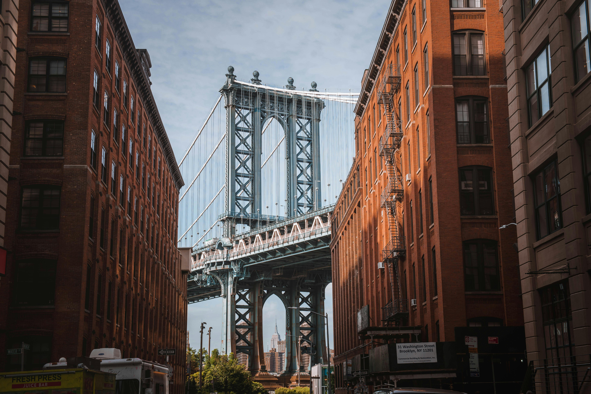
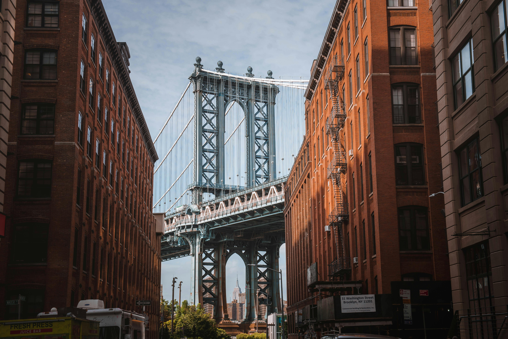


 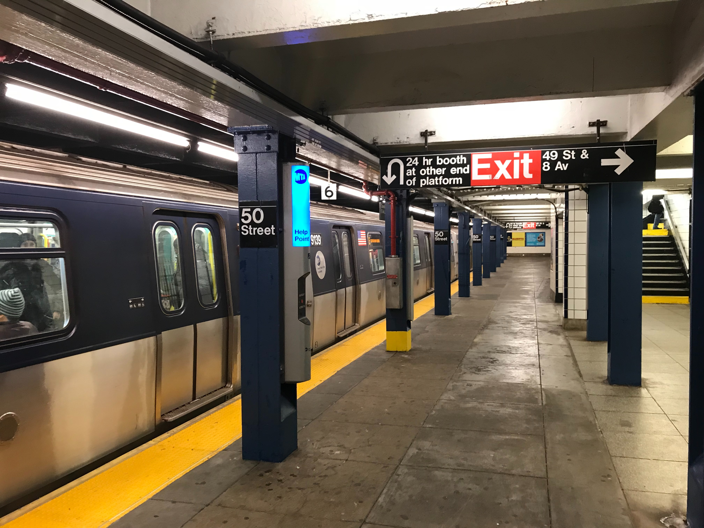
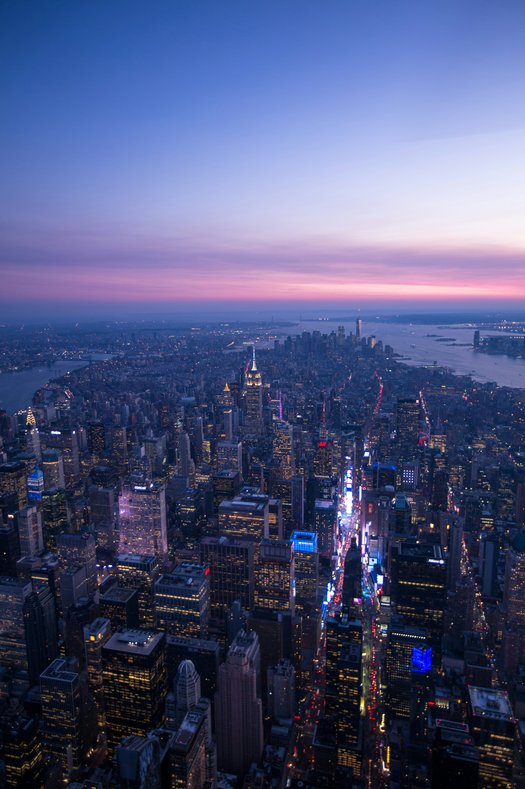
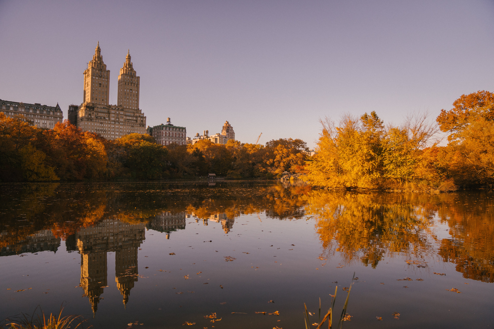
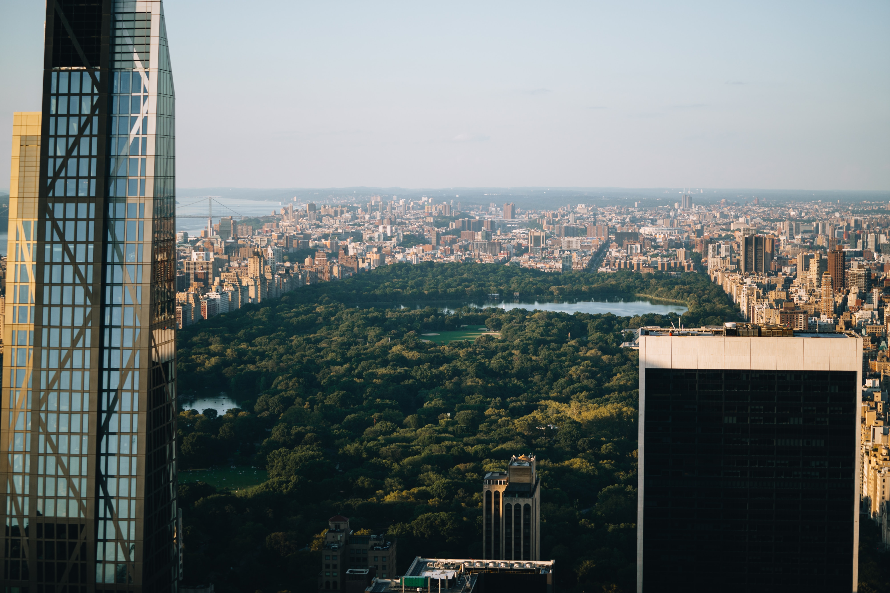
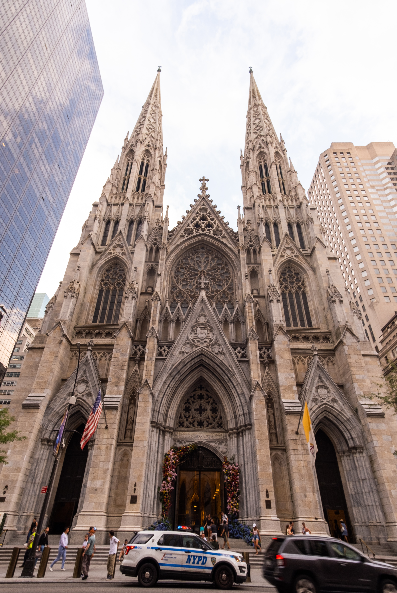
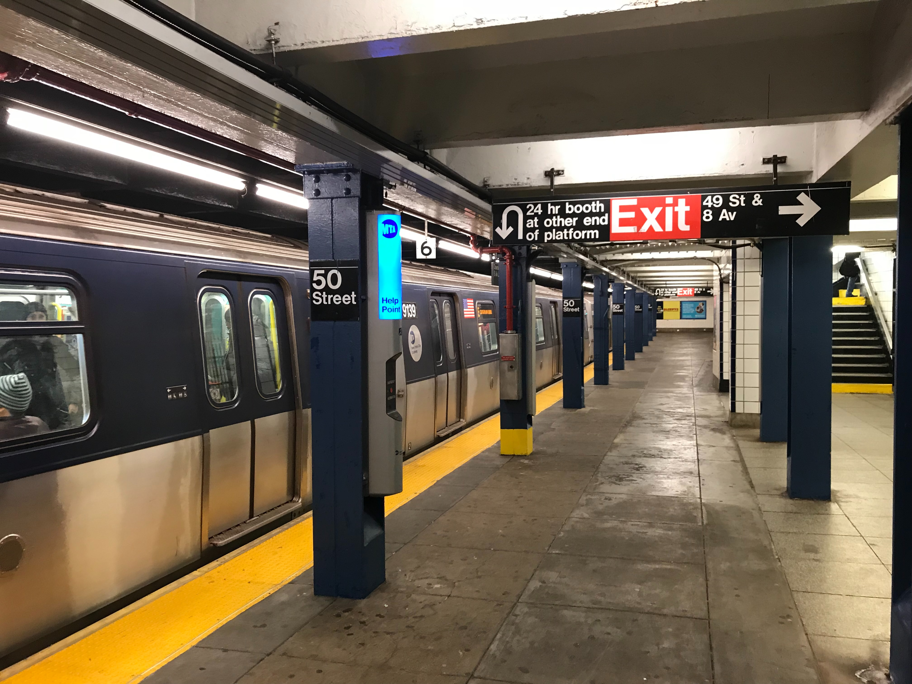
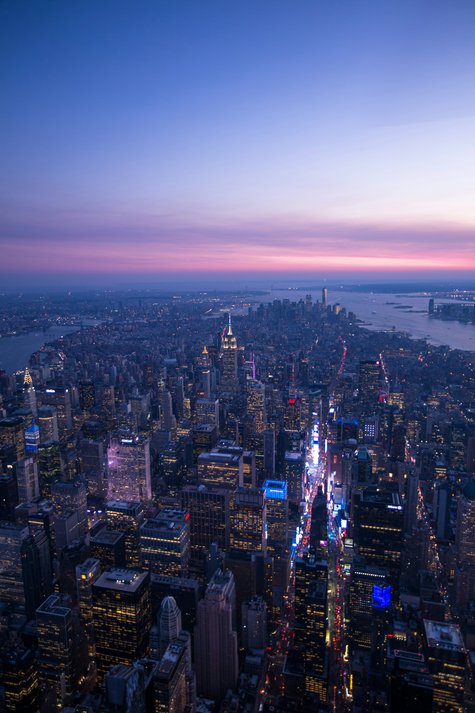
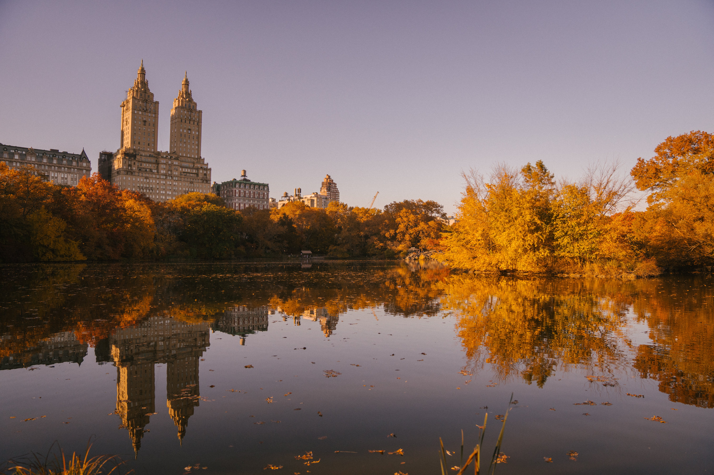
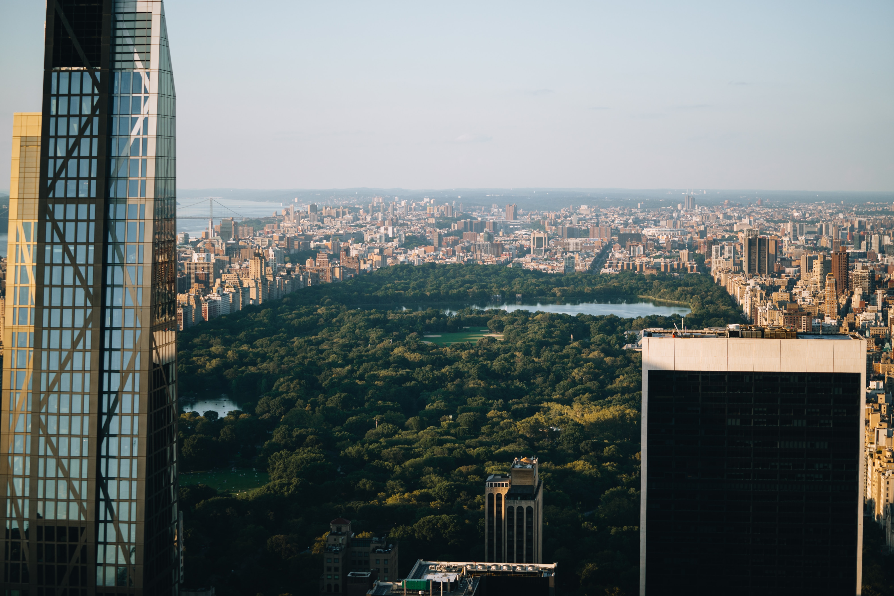
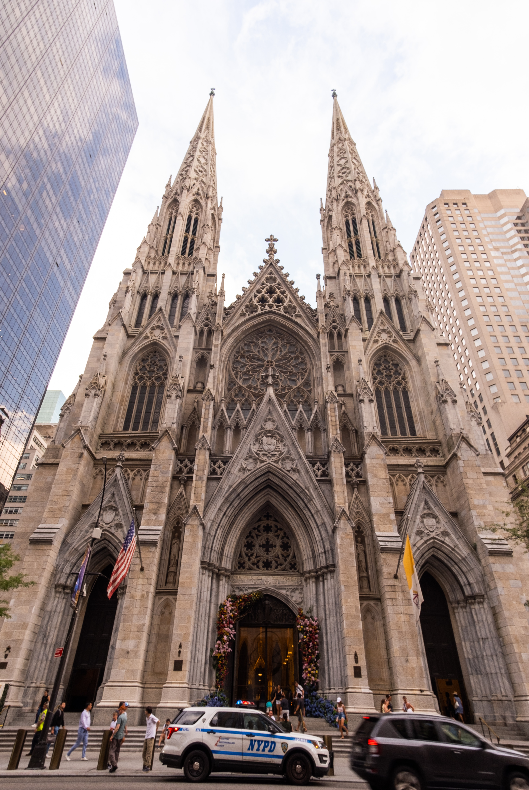